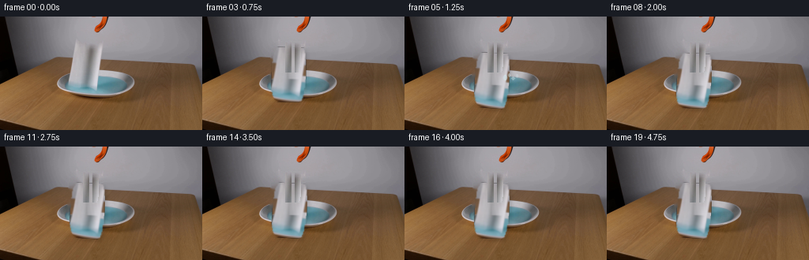
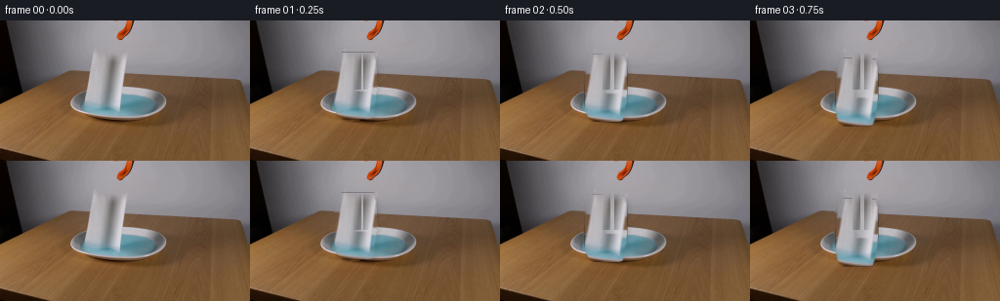

CODING AGENTS AS PIXEL WORLD MODELS
traex/DeepSeek-V4.1-Flash · 0129
点击播放 · 原生 RGB 像素
此结果可播放，但该运行尚未通过最终提交审核。页面展示不代表评测通过。
逐轮保存的候选
回放视频、检查图与代码变化。
每份候选均可单独播放。实际图片检查记录在下方工具轨迹中。
候选 01播放与检查图
点击播放 · 原生 RGB 像素


展开代码变化
--- 上一保存版本
+++ 本次保存版本
@@ -0,0 +1,433 @@
+from pathlib import Path
+
+import cv2
+import numpy as np
+from PIL import Image
+
+import artifact_io
+
+
+CASE_DIR = Path(__file__).resolve().parent
+WIDTH = 256
+HEIGHT = 144
+FRAME_COUNT = 20
+FPS = 4
+
+
+def _smoothstep(a, b, value):
+ t = np.clip((value - a) / (b - a), 0.0, 1.0)
+ return t * t * (3.0 - 2.0 * t)
+
+
+def _polygon_mask(shape, points):
+ mask = np.zeros(shape, dtype=np.uint8)
+ cv2.fillPoly(mask, [np.asarray(points, dtype=np.int32)], 255)
+ return mask
+
+
+def _soften(mask, sigma=0.65):
+ return cv2.GaussianBlur(mask.astype(np.float32) / 255.0, (0, 0), sigma)
+
+
+def _make_clean_plate(frame):
+ """Remove the held towel and gripper while retaining the fixed lab scene."""
+ mask = np.zeros((HEIGHT, WIDTH), dtype=np.uint8)
+
+ towel_outline = np.array(
+ [
+ (94, 32),
+ (126, 32),
+ (128, 39),
+ (129, 51),
+ (129, 62),
+ (128, 72),
+ (127, 82),
+ (125, 94),
+ (119, 99),
+ (109, 101),
+ (98, 100),
+ (91, 96),
+ (88, 90),
+ (86, 81),
+ (86, 70),
+ (87, 58),
+ (88, 46),
+ (90, 37),
+ ],
+ dtype=np.int32,
+ )
+ cv2.fillPoly(mask, [towel_outline], 255)
+
+ # The narrow central grip is part of the tool, not the towel.
+ cv2.fillPoly(
+ mask,
+ [np.array([(108, 35), (121, 35), (121, 71), (108, 71)], dtype=np.int32)],
+ 255,
+ )
+ # The visible orange-black tip enters at the top edge.
+ cv2.fillPoly(
+ mask,
+ [np.array([(117, 0), (137, 0), (138, 8), (134, 20), (126, 21), (121, 16)], dtype=np.int32)],
+ 255,
+ )
+ mask = cv2.dilate(mask, np.ones((3, 3), np.uint8), iterations=1)
+
+ bgr = cv2.cvtColor(frame, cv2.COLOR_RGB2BGR)
+ repaired = cv2.inpaint(bgr, mask, 4, cv2.INPAINT_TELEA)
+ repaired = cv2.cvtColor(repaired, cv2.COLOR_BGR2RGB)
+
+ # A very light grain pass keeps the inpainted cloth/dish region from looking
+ # smoother than the surrounding photographed surface.
+ rng = np.random.default_rng(129)
+ grain = rng.normal(0.0, 1.15, frame.shape)
+ feathered = cv2.GaussianBlur((mask > 0).astype(np.float32), (0, 0), 1.5)
+ feathered = np.clip(feathered * 1.35, 0.0, 1.0)[..., None]
+ repaired = np.clip(repaired.astype(np.float32) + grain * feathered, 0, 255)
+ return repaired.astype(np.uint8)
+
+
+def _extract_towel(frame):
+ x0, y0, x1, y1 = 86, 32, 130, 101
+ crop = frame[y0:y1, x0:x1].astype(np.float32).copy()
+
+ outline = np.array(
+ [
+ (8, 0),
+ (40, 0),
+ (42, 8),
+ (43, 21),
+ (43, 34),
+ (42, 45),
+ (41, 57),
+ (39, 66),
+ (33, 69),
+ (23, 70),
+ (12, 69),
+ (5, 66),
+ (2, 59),
+ (0, 50),
+ (0, 38),
+ (1, 25),
+ (2, 13),
+ (4, 5),
+ ],
+ dtype=np.int32,
+ )
+ alpha = _polygon_mask((y1 - y0, x1 - x0), outline).astype(np.float32) / 255.0
+
+ # Replace the dark central gripper strip with neighboring cloth. Frame 00
+ # still uses the untouched source image, so this only affects motion frames.
+ local_y0, local_y1 = 3, 40
+ local_x0, local_x1 = 21, 36
+ for yy in range(local_y0, local_y1):
+ left = crop[yy, local_x0 - 2 : local_x0 + 1].mean(axis=0)
+ right = crop[yy, local_x1 - 1 : local_x1 + 2].mean(axis=0)
+ for xx in range(local_x0, local_x1):
+ t = (xx - local_x0) / max(1, local_x1 - local_x0 - 1)
+ crop[yy, xx] = (1.0 - t) * left + t * right
+ crop = cv2.GaussianBlur(crop, (3, 3), 0.55)
+
+ # Preserve a little photographed texture after the localized repair.
+ yy, xx = np.mgrid[0 : y1 - y0, 0 : x1 - x0]
+ texture = (
+ 1.8 * np.sin(xx * 0.63 + yy * 0.17)
+ + 1.1 * np.sin(xx * 1.37 - yy * 0.29)
+ )
+ repair_zone = (
+ (yy >= local_y0)
+ & (yy < local_y1)
+ & (xx >= local_x0 - 1)
+ & (xx < local_x1 + 1)
+ )
+ crop[repair_zone] += texture[repair_zone, None]
+ crop = np.clip(crop, 0, 255)
+ alpha = _soften((alpha * 255).astype(np.uint8), 0.55)
+ return crop, alpha, (x0, y0)
+
+
+def _extract_gripper(frame):
+ # Top orange-black jaw.
+ top = frame[0:22, 114:140].astype(np.float32).copy()
+ tr, tg, tb = top.transpose(2, 0, 1)
+ orange = (tr > 95) & (tr > tg + 18) & (tg > tb + 7)
+ dark = (tr + tg + tb) / 3.0 < 100
+ top_mask = (orange | dark).astype(np.uint8)
+ count, labels, stats, _ = cv2.connectedComponentsWithStats(top_mask, 8)
+ keep = np.zeros_like(top_mask)
+ for label in range(1, count):
+ area = stats[label, cv2.CC_STAT_AREA]
+ if area >= 3:
+ keep[labels == label] = 255
+ keep = cv2.dilate(keep, np.ones((2, 2), np.uint8), iterations=1)
+ top_alpha = _soften(keep, 0.45)
+
+ # The dark central grip is split into two small jaws during release.
+ grip = frame[34:72, 107:123].astype(np.float32).copy()
+ lum = grip.mean(axis=2)
+ grip_mask = (lum < 177).astype(np.uint8) * 255
+ grip_mask = cv2.morphologyEx(grip_mask, cv2.MORPH_CLOSE, np.ones((3, 3), np.uint8))
+ grip_mask = cv2.dilate(grip_mask, np.ones((2, 2), np.uint8), iterations=1)
+ grip_alpha = _soften(grip_mask, 0.4)
+ return (top, top_alpha, (114, 0)), (grip, grip_alpha, (107, 34))
+
+
+def _warp_rgba(rgb, alpha, origin, frame_index, dx, dy, angle, bend, squash, blur=0.0):
+ h, w = alpha.shape
+ cx = w * 0.5
+ cy = h * 0.5
+ theta = np.deg2rad(angle)
+ c, s = np.cos(theta), np.sin(theta)
+
+ margin = 14
+ out_x0 = max(0, int(np.floor(origin[0] + dx - margin)))
+ out_y0 = max(0, int(np.floor(origin[1] + dy - margin)))
+ out_x1 = min(WIDTH, int(np.ceil(origin[0] + dx + w + margin)))
+ out_y1 = min(HEIGHT, int(np.ceil(origin[1] + dy + h + margin)))
+ if out_x1 <= out_x0 or out_y1 <= out_y0:
+ return None
+
+ yy, xx = np.mgrid[out_y0:out_y1, out_x0:out_x1].astype(np.float32)
+ px = xx - (origin[0] + dx) - cx
+ py = yy - (origin[1] + dy) - cy
+ rx = c * px + s * py
+ ry = -s * px + c * py
+ rx /= 1.0
+ ry /= squash
+
+ v = np.clip((ry + cy) / max(1.0, h - 1), 0.0, 1.0)
+ u = np.clip((rx + cx) / max(1.0, w - 1), 0.0, 1.0)
+ # Lower cloth swings more than the gripped top.
+ rx -= bend * np.sin(np.pi * v) * (0.3 + 0.7 * v)
+ # A small cloth ripple travels through the lower half after release.
+ if frame_index >= 3:
+ phase = 0.95 * frame_index
+ rx += 0.45 * np.sin(2.7 * v - phase) * (v**2)
+ ry += 0.35 * np.sin(2.2 * u + 0.8 * v - phase) * (v**1.5)
+
+ map_x = (rx + cx).astype(np.float32)
+ map_y = (ry + cy).astype(np.float32)
+
+ src_rgb = rgb.astype(np.float32)
+ src_alpha = alpha.astype(np.float32)
+ if blur > 0:
+ k = int(max(3, blur))
+ if k % 2 == 0:
+ k += 1
+ kernel = np.zeros((k, 1), dtype=np.float32)
+ kernel[:, 0] = np.hanning(k)
+ kernel /= kernel.sum()
+ src_rgb = cv2.filter2D(src_rgb, -1, kernel)
+ src_alpha = cv2.filter2D(src_alpha, -1, kernel)
+
+ warped_rgb = cv2.remap(
+ src_rgb,
+ map_x,
+ map_y,
+ interpolation=cv2.INTER_LINEAR,
+ borderMode=cv2.BORDER_CONSTANT,
+ borderValue=(0, 0, 0),
+ )
+ warped_a = cv2.remap(
+ src_alpha,
+ map_x,
+ map_y,
+ interpolation=cv2.INTER_LINEAR,
+ borderMode=cv2.BORDER_CONSTANT,
+ borderValue=0,
+ )
+
+ if frame_index >= 3:
+ phase = 0.8 * frame_index
+ shade = (
+ 2.2 * np.sin(7.0 * u + 1.7 * v + phase)
+ + 1.4 * np.sin(12.0 * v - 0.8 * phase)
+ )
+ warped_rgb = np.clip(warped_rgb + shade[..., None] * (warped_a[..., None] > 0.05), 0, 255)
+
+ # Slight cooling and darkening where the sheet approaches the liquid.
+ wet = _smoothstep(0.72, 1.0, v)[..., None]
+ warped_rgb = warped_rgb * (1.0 - 0.035 * wet)
+ warped_rgb[..., 2] += 2.0 * wet[..., 0]
+
+ return warped_rgb.astype(np.float32), warped_a.astype(np.float32), (out_x0, out_y0)
+
+
+def _composite(base, layer):
+ if layer is None:
+ return base
+ rgb, alpha, (x0, y0) = layer
+ h, w = alpha.shape
+ out = base.copy()
+ region = out[y0 : y0 + h, x0 : x0 + w].astype(np.float32)
+ a = np.clip(alpha, 0.0, 1.0)[..., None]
+ out[y0 : y0 + h, x0 : x0 + w] = np.clip(region * (1.0 - a) + rgb * a, 0, 255).astype(np.uint8)
+ return out
+
+
+def _shadow(base, layer, frame_index, strength):
+ if layer is None:
+ return base
+ _, alpha, (x0, y0) = layer
+ h, w = alpha.shape
+ full = np.zeros((HEIGHT, WIDTH), dtype=np.float32)
+ full[y0 : y0 + h, x0 : x0 + w] = alpha
+ full = cv2.GaussianBlur(full, (0, 0), 2.2)
+ shift = np.float32([[1, 0, 2.8], [0, 1, 3.2]])
+ full = cv2.warpAffine(full, shift, (WIDTH, HEIGHT))
+ out = base.astype(np.float32)
+ out *= 1.0 - strength * np.clip(full, 0.0, 1.0)[..., None]
+ return np.clip(out, 0, 255).astype(np.uint8)
+
+
+def _animate_liquid(base, frame_index, impact_frame):
+ out = base.astype(np.float32)
+ yy, xx = np.mgrid[0:HEIGHT, 0:WIDTH]
+ ellipse = ((xx - 121.0) / 40.0) ** 2 + ((yy - 86.5) / 12.0) ** 2
+ dish = np.clip(1.0 - ellipse, 0.0, 1.0) ** 0.35
+ b = base[..., 2].astype(np.float32)
+ r = base[..., 0].astype(np.float32)
+ liquid = np.clip((b - r - 3.0) / 28.0, 0.0, 1.0)
+ mask = dish * liquid
+ if frame_index < impact_frame:
+ return base
+
+ age = frame_index - impact_frame
+ distance = np.sqrt((xx - 116.0) ** 2 + ((yy - 89.0) * 1.45) ** 2)
+ envelope = np.exp(-distance / 25.0)
+ amplitude = 5.2 * np.exp(-age / 4.3)
+ wave = np.sin(0.82 * distance - 1.55 * age) * envelope * amplitude * mask
+ out[..., 0] += wave * 0.52
+ out[..., 1] += wave * 0.72
+ out[..., 2] += wave * 0.82
+
+ # A brief impact brightening near the towel's lower edge.
+ glow = np.exp(-((xx - 119.0) ** 2 / 280.0 + (yy - 91.0) ** 2 / 34.0))
+ glow *= np.exp(-age / 1.4) * mask
+ out += glow[..., None] * np.array([5.0, 8.0, 9.0], dtype=np.float32)
+ return np.clip(out, 0, 255).astype(np.uint8)
+
+
+def _splash(base, frame_index, impact_frame):
+ age = frame_index - impact_frame
+ if age < 0 or age > 4:
+ return base
+ out = base.copy()
+ drops = [
+ (126, 78, 1.7, 2.8, 1.0),
+ (131, 75, 1.2, 2.2, 0.8),
+ (137, 80, 1.5, 2.0, 0.7),
+ (143, 77, 1.0, 1.7, 0.55),
+ ]
+ for index, (x, y, sx, sy, opacity) in enumerate(drops):
+ rise = age * (1.2 + index * 0.16)
+ yy = int(round(y - rise))
+ xx = int(round(x + np.sin(age * 1.1 + index) * 0.7))
+ a = opacity * np.exp(-age / 1.9)
+ if a < 0.08 or not (0 <= xx < WIDTH and 0 <= yy < HEIGHT):
+ continue
+ layer = out.copy()
+ cv2.ellipse(
+ layer,
+ (xx, yy),
+ (max(1, int(round(sx))), max(1, int(round(sy)))),
+ 0,
+ 0,
+ 360,
+ (207, 229, 233),
+ -1,
+ cv2.LINE_AA,
+ )
+ out = cv2.addWeighted(layer, a, out, 1.0 - a, 0)
+ return out
+
+
+def _overlay_gripper(base, top, grip, frame_index):
+ if frame_index == 0:
+ return base
+ top_rgb, top_alpha, top_origin = top
+ grip_rgb, grip_alpha, grip_origin = grip
+
+ # The upper mechanism stays fixed while the two dark jaws part slightly.
+ out = _composite(base, (top_rgb, top_alpha, top_origin))
+ split = min(1.0, max(0.0, (frame_index - 0.35) / 1.4))
+ for side in (-1.0, 1.0):
+ shifted = np.zeros_like(grip_alpha)
+ x_shift = int(round(side * 1.8 * split))
+ if x_shift < 0:
+ shifted[:, :x_shift] = grip_alpha[:, -x_shift:]
+ elif x_shift > 0:
+ shifted[:, x_shift:] = grip_alpha[:, :-x_shift]
+ else:
+ shifted = grip_alpha.copy()
+ # Each half contains one edge of the original narrow grip.
+ if side < 0:
+ shifted[:, grip_alpha.shape[1] // 2 :] = 0
+ else:
+ shifted[:, : grip_alpha.shape[1] // 2] = 0
+ origin = (grip_origin[0] + x_shift, grip_origin[1] - 1)
+ out = _composite(out, (grip_rgb, shifted, origin))
+ return out
+
+
+def main():
+ first = np.asarray(Image.open(CASE_DIR / "first_frame.png").convert("RGB"), dtype=np.uint8)
+ assert first.shape == (HEIGHT, WIDTH, 3)
+
+ clean = _make_clean_plate(first)
+ towel_rgb, towel_alpha, towel_origin = _extract_towel(first)
+ top, grip = _extract_gripper(first)
+
+ # Small, physically plausible offsets. The towel slips free, accelerates,
+ # impacts the liquid at 1.0 s, then makes two damped rebounds.
+ towel_dy = np.array(
+ [0.0, 0.6, 3.0, 7.1, 11.6, 14.6, 15.6, 14.6, 15.15, 14.82, 14.92, 14.88, 14.90, 14.89, 14.90, 14.90, 14.90, 14.90, 14.90, 14.90],
+ dtype=np.float32,
+ )
+ towel_dx = np.array(
+ [0.0, 0.0, 0.35, 0.9, 1.55, 2.0, 2.2, 2.1, 2.0, 2.05, 2.0, 2.01, 2.0, 2.0, 2.0, 2.0, 2.0, 2.0, 2.0, 2.0],
+ dtype=np.float32,
+ )
+ towel_angle = np.array(
+ [0.0, 0.1, 0.55, 1.35, 2.25, 2.9, 3.15, 2.75, 2.55, 2.62, 2.57, 2.59, 2.58, 2.58, 2.58, 2.58, 2.58, 2.58, 2.58, 2.58],
+ dtype=np.float32,
+ )
+ bend = np.array(
+ [0.0, 0.0, 0.15, 0.55, 0.95, 1.2, 0.9, 1.25, 0.98, 1.08, 1.0, 1.03, 1.0, 1.01, 1.0, 1.0, 1.0, 1.0, 1.0, 1.0],
+ dtype=np.float32,
+ )
+ squash = np.array(
+ [1.0, 1.0, 1.002, 1.006, 1.012, 1.018, 1.014, 1.019, 1.015, 1.017, 1.016, 1.016, 1.016, 1.016, 1.016, 1.016, 1.016, 1.016, 1.016, 1.016],
+ dtype=np.float32,
+ )
+
+ frames = np.empty((FRAME_COUNT, HEIGHT, WIDTH, 3), dtype=np.uint8)
+ frames[0] = first
+ impact_frame = 4
+
+ for index in range(1, FRAME_COUNT):
+ base = _animate_liquid(clean, index, impact_frame)
+ layer = _warp_rgba(
+ towel_rgb,
+ towel_alpha,
+ towel_origin,
+ index,
+ float(towel_dx[index]),
+ float(towel_dy[index]),
+ float(towel_angle[index]),
+ float(bend[index]),
+ float(squash[index]),
+ blur=2.5 if 2 <= index <= 5 else 0.0,
+ )
+ shadow_strength = 0.10 + 0.05 * _smoothstep(2.0, 6.0, index)
+ base = _shadow(base, layer, index, shadow_strength)
+ frame = _composite(base, layer)
+ frame = _overlay_gripper(frame, top, grip, index)
+ frame = _splash(frame, index, impact_frame)
+ frames[index] = frame
+
+ assert np.array_equal(frames[0], first)
+ artifact_io.save(frames, CASE_DIR)
+
+
+if __name__ == "__main__":
+ main()
可观测工具轨迹
实际执行的命令与返回图片。
命令 1exit 0
/bin/bash -c "pwd && rg --files -g '"'!*.mp4'"' -g '"'!*.webm'"' | sed -n '1,200p'"
命令 2exit 0
/bin/bash -c "sed -n '1,240p' prompt.txt"
命令 3exit 0
/bin/bash -c "sed -n '1,280p' GENERATION_RULES.md"
命令 4exit 0
/bin/bash -c 'ls -lah && file first_frame.png && identify first_frame.png 2>/dev/null || true'
命令 5exit 0
/bin/bash -c "sed -n '1,260p' artifact_io.py"
命令 6exit 0
/bin/bash -c "sed -n '1,260p' player_template.html"
命令 7exit 0
/bin/bash -c "python - <<'PY'
from PIL import Image
import numpy as np
im=Image.open('first_frame.png').convert('RGB')
a=np.array(im)
print('size', im.size, 'mode', im.mode, 'shape', a.shape, 'dtype', a.dtype)
print('global min/max/mean/std', a.min(axis=(0,1)), a.max(axis=(0,1)), a.mean(axis=(0,1)).round(1), a.std(axis=(0,1)).round(1))
# quantized palette counts
q=(a//16*16).reshape(-1,3)
u,c=np.unique(q,axis=0,return_counts=True)
for i in np.argsort(c)[-25:][::-1]: print(tuple(u[i]), int(c[i]))
PY"命令 8exit 0
/bin/bash -c "python - <<'PY'
from PIL import Image
import numpy as np
from sklearn.cluster import MiniBatchKMeans
im=np.array(Image.open('first_frame.png').convert('RGB'))
p=im.reshape(-1,3)
km=MiniBatchKMeans(14,random_state=0,n_init=5,batch_size=4096).fit(p)
lab=km.labels_.reshape(im.shape[:2]); c=km.cluster_centers_.astype(int)
for i,n in sorted(enumerate(np.bincount(lab.ravel(),minlength=14)),key=lambda x:-x[1]):
ys,xs=np.where(lab==i)
print(i,n,'rgb',tuple(c[i]),'bbox', (xs.min(),ys.min(),xs.max(),ys.max()),'centroid',(xs.mean().round(1),ys.mean().round(1)))
PY"命令 9exit 0
/bin/bash -c "python - <<'PY'
from PIL import Image
import numpy as np
im=np.array(Image.open('first_frame.png').convert('RGB'))
# Print ANSI truecolor mosaic at 64x36 with 2x2 avg
for y in range(0,144,4):
line=''
for x in range(0,256,4):
b=im[y:y+4,x:x+4].mean((0,1)).astype(int)
line+=f'\\x1b[48;2;{b[0]};{b[1]};{b[2]}m '
print(line+'\\x1b[0m')
PY"命令 10exit 0
/bin/bash -c "python - <<'PY'
from PIL import Image
import numpy as np
im=np.array(Image.open('first_frame.png').convert('RGB')).astype(float)
# 2x2 cells, classification by median-ish mean
for yy in range(0,144,2):
line=''
for xx in range(0,256,2):
r,g,b=im[yy:yy+2,xx:xx+2].mean((0,1))
mx=max(r,g,b); mn=min(r,g,b); sat=mx-mn
if r>105 and r>g*1.45 and g>b*1.3: c='O'
elif b>r+16 and g>r+4: c='B'
elif mx<35: c=' '
elif mx<65: c='.'
elif sat<14 and mx>145: c='W'
elif sat<14 and mx>90: c='w'
elif sat<18: c='g'
elif r>g+8 and g>b+10: c='b'
elif r>g+18 and g>b+15: c='t'
else: c='+'
line+=c
print(f'{yy:03d} {line}')
PY"命令 11exit 0
/bin/bash -c "python - <<'PY'
from PIL import Image
import numpy as np
im=np.array(Image.open('first_frame.png').convert('RGB')).astype(float)
# rough regions report color means / ranges
regions={'bg_top':(0,0,256,45),'bg_mid':(0,45,256,70),'towel_center':(90,35,150,95),'dish':(85,72,160,100),'grabber':(110,0,140,100),'table':(0,100,256,144)}
for k,(x0,y0,x1,y1) in regions.items():
a=im[y0:y1,x0:x1]
print(k, 'mean',a.mean((0,1)).round(1), 'q',np.quantile(a.reshape(-1,3),[.1,.5,.9],axis=0).round(0).tolist())
# columns with orange or blue, line bboxes
r,g,b=im.transpose(2,0,1)
orange=(r>110)&(r>g*1.55)&(g>b*1.3)
blue=(b>r+15)&(g>r+2)&(b>80)
for name,m in [('orange',orange),('blue',blue)]:
ys,xs=np.where(m)
print(name, len(xs), (xs.min(),ys.min(),xs.max(),ys.max()))
for y in range(0,144,4):
xx=np.where(m[y:y+4].any(0))[0]
if len(xx): print(' ',y, int(xx.min()),int(xx.max()),len(xx))
PY"命令 12exit 0
/bin/bash -c "python - <<'PY'
from PIL import Image
import numpy as np
im=np.array(Image.open('first_frame.png').convert('RGB'))
# downscale with lanczos to ascii by luminance with hue hints for select 128x72
sm=np.array(Image.fromarray(im).resize((128,72),Image.Resampling.LANCZOS)).astype(int)
chars=' .:-=+*#%@'
for y in range(72):
line=''
for x in range(128):
r,g,b=sm[y,x]; lum=.2126*r+.7152*g+.0722*b
ch=chars[min(9,int(lum/256*10))]
if r>100 and r>g*1.5 and g>b*1.25: ch='O'
elif b>r+15 and g>r+3 and b>85: ch='B'
line+=ch
print(f'{y*2:03d} {line}')
PY"命令 13exit 0
/bin/bash -c "python - <<'PY'
try:
import cv2; print('cv2',cv2.__version__)
except Exception as e: print('no cv2',e)
try:
import scipy; print('scipy',scipy.__version__)
except Exception as e: print('no scipy',e)
PY"命令 14exit 0
/bin/bash -c "python - <<'PY'
from PIL import Image
im=Image.open('first_frame.png')
# save crop x3 in tmp for inspection; not final
for name,box in [('grabber',(95,0,165,115)),('towel',(75,30,170,100)),('dish',(75,70,170,105)),('wide',(50,0,190,120))]:
im.crop(box).resize(((box[2]-box[0])*4,(box[3]-box[1])*4),Image.Resampling.NEAREST).save('.tmp/'+name+'.png')
PY"命令 15exit 0
/bin/bash -c "python - <<'PY'
from PIL import Image
import numpy as np
im=np.array(Image.open('first_frame.png').convert('RGB'))
# print x-ranges of key classes every row 30:112
for y in range(30,112):
r,g,b=im[y].T
orange=(r>110)&(r>g*1.55)&(g>b*1.25)
blue=(b>r+15)&(g>r+2)&(b>80)
paper=(r>150)&(g>150)&(b>150)&(np.abs(r.astype(int)-g.astype(int))<20)
for name,m in [('O',orange),('B',blue),('P',paper)]:
xs=np.where(m)[0]
if len(xs)>0:
# intervals
gaps=np.where(np.diff(xs)>1)[0]
starts=np.r_[0,gaps+1]; ends=np.r_[gaps,len(xs)-1]
ints=[(int(xs[s]),int(xs[e])) for s,e in zip(starts,ends) if xs[e]-xs[s]>=0]
if name"'!='"'P' or y in [35,40,45,50,55,60,65,70,75,80,85,90,95,100,105,110]: print(y,name,ints[:8])
PY"命令 16exit 0
/bin/bash -c "python - <<'PY'
from PIL import Image
import numpy as np
im=np.array(Image.open('first_frame.png').convert('RGB'))
# determine orange geometry with HSV
import cv2
hsv=cv2.cvtColor(im,cv2.COLOR_RGB2HSV)
m=(hsv[:,:,0]<20)&(hsv[:,:,1]>90)&(hsv[:,:,2]>60)
ys,xs=np.where(m)
print('orange bbox',xs.min(),ys.min(),xs.max(),ys.max(),len(xs))
for y in range(0,115):
xx=np.where(m[y])[0]
if len(xx): print(y,xx.min(),xx.max(),len(xx))
PY"命令 17exit 0
/bin/bash -c "python - <<'PY'
from PIL import Image
import numpy as np, cv2
im=np.array(Image.open('first_frame.png').convert('RGB'))
hsv=cv2.cvtColor(im,cv2.COLOR_RGB2HSV)
# inspect pixels around grabber manually x,y RGB HSV
for y in range(0,110,5):
print('\\ny',y)
for x in range(100,156,5):
r,g,b=im[y,x]; h,s,v=hsv[y,x]
print(f'{x}:{r:3},{g:3},{b:3}',end=' ')
print()
PY"命令 18exit 0
/bin/bash -c "python - <<'PY'
from PIL import Image
import numpy as np
im=np.array(Image.open('first_frame.png').convert('RGB'))
# dump ascii luma crop x=75..170 y=25..105 at 1px per char maybe manageable 95x80
sm=im[25:105,75:170]
chars=' .:-=+*#%@'
for j,row in enumerate(sm):
line=''
for p in row:
r,g,b=p; lum=.2126*r+.7152*g+.0722*b
ch=chars[min(9,int(lum/256*10))]
if b>r+15 and g>r+2 and b>80: ch='B'
elif r>150 and g>150 and b>150 and abs(int(r)-int(g))<20: ch='P'
elif r>100 and r>g*1.55 and g>b*1.25: ch='O'
line+=ch
print(f'{j+25:03d} {line}')
PY"命令 19exit 0
/bin/bash -c "python - <<'PY'
from PIL import Image
import numpy as np
im=np.array(Image.open('first_frame.png').convert('RGB'))
# precise grabber: luma/gray difference in x 108:155 y 0:45 and central shaft x110:126 y25:100
for x in range(108,158,2):
vals=im[0:45,x]
sat=vals.max(1).astype(int)-vals.min(1).astype(int)
print(x, 'orange n', ((sat>55)&(vals[:,0]>vals[:,1]+25)).sum(), 'sat mean',sat.mean().round(1),'rgb0-10',vals[:10].mean(0).round(0).astype(int).tolist())
PY"命令 20exit 0
/bin/bash -c "python - <<'PY'
from PIL import Image
import numpy as np
im=np.array(Image.open('first_frame.png').convert('RGB'))
# save individual subcrops high nearest to tmp and report text safe
from PIL import ImageDraw
# derive grabber orange mask by comparing to background estimated per row from x100..160 excluding center
for y in [0,2,4,8,12,16,18,20,22,24,25,26,27,28,29,30,32,34,36,38,40,42,44,46,48,50,52,54,56,58,60,62,64,66,68,70,72,74,76,78,80,82,84,86,88,90,92,94,96,98,100,102,104,106,108,110]:
vals=[]
for x in range(90,175,4):
r,g,b=im[y,x]; vals.append(f'{x}:{r:3},{g:3},{b:3}')
print(f'y={y:3}', ' '.join(vals))
PY"命令 21exit 0
/bin/bash -c "python - <<'PY'
from PIL import Image
import numpy as np, cv2
im=np.array(Image.open('first_frame.png').convert('RGB'))
g=cv2.cvtColor(im,cv2.COLOR_RGB2GRAY)
# edges
e=cv2.Canny(g,30,80)
lines=cv2.HoughLinesP(e,1,np.pi/180,threshold=18,minLineLength=12,maxLineGap=4)
print('lines',len(lines) if lines is not None else 0)
if lines is not None:
for l in sorted(lines[:,0].tolist(), key=lambda q: -(q[2]-q[0])**2-(q[3]-q[1])**2)[:60]: print(l)
# contour bboxes
cnts,_=cv2.findContours(e,cv2.RETR_LIST,cv2.CHAIN_APPROX_SIMPLE)
for c in sorted(cnts,key=cv2.contourArea,reverse=True)[:30]:
x,y,w,h=cv2.boundingRect(c); print('contour',x,y,w,h,'area',cv2.contourArea(c))
PY"命令 22exit 0
/bin/bash -c "python - <<'PY'
from PIL import Image
import numpy as np, cv2
im=np.array(Image.open('first_frame.png').convert('RGB'))
# inspect columns/rows with average absolute gradients around object
for name, a, axis in [('x',im,1),('y',im,0)]:
g=np.abs(np.diff(a.astype(float),axis=axis)).mean(axis=2)
score=g.mean(0) if axis==1 else g.mean(1)
print(name)
print(sorted([(round(float(v),2),i) for i,v in enumerate(score)], reverse=True)[:50])
PY"命令 23exit 0
/bin/bash -c "python - <<'PY'
from PIL import Image
import numpy as np
im=np.array(Image.open('first_frame.png').convert('RGB'))
# derive average RGB per row/column for key rectangle, detect background-dominated sides
for y in range(0,110,2):
row=im[y,85:175].astype(float)
med=np.median(row,axis=0)
# count likely orange, dark black, pale
print(f'{y:3} med {med.astype(int)} x125-150', im[y,125:150:5].tolist())
PY"命令 24exit 0
/bin/bash -c "python - <<'PY'
from PIL import Image
import numpy as np
im=np.array(Image.open('first_frame.png').convert('RGB'))
# per pixel dark stripe scan y0-60: print rgb values x108..150
for y in range(0,60,2):
print(f'{y:02d}', ' '.join(f'{im[y,x,0]:3}/{im[y,x,1]:3}/{im[y,x,2]:3}' for x in range(108,152,2)))
PY"命令 25exit 0
/bin/bash -c "python - <<'PY'
from PIL import Image
import numpy as np
im=np.array(Image.open('first_frame.png').convert('RGB'))
# print x coordinates and color at y 0-18 threshold orange r>150 g<150
for y in range(20):
xs=np.where((im[y,:,0]>150)&(im[y,:,1]<150))[0]
print(y, [(int(x),tuple(map(int,im[y,x]))) for x in xs])
PY"命令 26exit 0
/bin/bash -c "python - <<'PY'
from PIL import Image
import numpy as np
im=np.array(Image.open('first_frame.png').convert('RGB'))
# all orange-ish bbox in top half but exclude bg wood via r/g ratio; report per row mask ranges
r,g,b=im[:,:,0].astype(float),im[:,:,1].astype(float),im[:,:,2].astype(float)
m=(r>150)&(r>g*1.6)&(g<130)&(np.arange(144)[:,None]<55)
for y in range(55):
xs=np.where(m[y])[0]
if len(xs): print(y, int(xs.min()),int(xs.max()),len(xs))
PY"命令 27exit 0
/bin/bash -c "python - <<'PY'
from PIL import Image
import numpy as np
im=np.array(Image.open('first_frame.png').convert('RGB'))
# render object masks with color by coordinate via ASCII for x 70..180 y 20..110 but assign
# dark D (lum<100), orange O, blue B, white P, brown T (r>g+10,g>b+10,lum<150), gray g
for y in range(20,112,1):
line=''
for x in range(70,181,1):
r,g,b=map(int,im[y,x]); lum=.2126*r+.7152*g+.0722*b
if r>140 and r>g*1.6 and g<135: ch='O'
elif b>r+14 and g>r+1 and b>75: ch='B'
elif r>150 and g>150 and b>150 and max(r,g,b)-min(r,g,b)<22: ch='P'
elif lum<70: ch='#'
elif lum<110: ch='D'
elif r>g+8 and g>b+8: ch='T'
elif lum<140: ch='d'
elif max(r,g,b)-min(r,g,b)<16: ch='g'
else: ch='.'
line+=ch
print(f'{y:03d} {line}')
PY"命令 28exit 0
/bin/bash -c "python - <<'PY'
from PIL import Image
import numpy as np
im=np.array(Image.open('first_frame.png').convert('RGB'))
# report suspected grabber rectangle and image corners exact
print('corners',im[0,0],im[0,-1],im[-1,0],im[-1,-1])
# Save x100..145 y0..75 as 4x nearest and print pixels with direct local rows 0..35 on coords
for y in range(0,36):
print(f'{y:02d}', ''.join('O' if (im[y,x,0]>150 and im[y,x,0]>im[y,x,1]*1.6) else '#' if im[y,x].mean()<90 else '+' if im[y,x].mean()<130 else 'P' if im[y,x].mean()>180 else '.' for x in range(100,150)))
PY"命令 29exit 0
/bin/bash -c "python - <<'PY'
from PIL import Image
import numpy as np, cv2
im=np.array(Image.open('first_frame.png').convert('RGB'))
# Connected components of orange/brown/gray object candidate using HSV
hsv=cv2.cvtColor(im,cv2.COLOR_RGB2HSV)
for desc,m in [
('orange', (hsv[:,:,0]<22)&(hsv[:,:,1]>110)&(hsv[:,:,2]>55)),
('brown', (hsv[:,:,0]<25)&(hsv[:,:,1]>35)&(hsv[:,:,1]<220)&(hsv[:,:,2]>45)&(hsv[:,:,2]<180)),
]:
n,lab,stats,cent=cv2.connectedComponentsWithStats(m.astype('uint8'),8)
print(desc)
for i in np.argsort(stats[1:,4])[-20:][::-1]+1:
x,y,w,h,area=stats[i]; print(' ',x,y,w,h,area)
PY"命令 30exit 0
/bin/bash -c "python - <<'PY'
from PIL import Image
import numpy as np
im=np.array(Image.open('first_frame.png').convert('RGB'))
# show target 3 rows colors around x115-140 at y19,20,25
for y in [19,20,21,22,23,24,25,26,27,28,30,34,35,36,40,44,48,50,52,54,55,56,57,58,60,62,64,66,68,69,70,72,74,75,76,77,78,79,80,81,82,83,84,85,86,87,88,89,90,91,92,93,94,95,96,97,98,99]:
print(y, [(x,tuple(map(int,im[y,x]))) for x in [112,114,116,118,120,122,124,126,128,130,132,134,136,138,140]])
PY"命令 31exit 0
/bin/bash -c "python - <<'PY'
from PIL import Image
import numpy as np
im=np.array(Image.open('first_frame.png').convert('RGB'))
# Orange black grabber may be at top center. Inspect x90:160 y0:30 zoom png only tmp
Image.fromarray(im[0:30,90:160]).resize((700,300),Image.Resampling.NEAREST).save('.tmp/top_grabber.png')
# colorbar separated channels maybe edge map
import cv2
hsv=cv2.cvtColor(im,cv2.COLOR_RGB2HSV)
sat=np.clip(hsv[:,:,1].astype(float)*2,0,255).astype('uint8')
Image.fromarray(sat).resize((512,288),Image.Resampling.NEAREST).save('.tmp/sat.png')
PY"命令 32exit 0
/bin/bash -c "python - <<'PY'
from PIL import Image
import numpy as np
im=np.array(Image.open('first_frame.png').convert('RGB'))
# print brightness gradient maps at x80-180 y0-30 coarse
for y in range(0,32,2):
print(f'{y:02d}', ''.join(' .:-=+*#%@'[min(9,int(im[y:y+2,x:x+2].mean()/25.6))] for x in range(80,180,2)))
PY"命令 33exit 0
/bin/bash -c "python - <<'PY'
from PIL import Image
import numpy as np
im=np.array(Image.open('first_frame.png').convert('RGB')).astype(float)
# segment grabber by difference from local horizontal smooth background via median over row x160:190 and x70:100? Background has vertical gradients.
# Grabber vertical top object only y0:20 orange wedge. maybe tool itself is tiny at top due out of frame and paper towel is 40x50.
# Identify high chroma orange only y<55
r,g,b=im.transpose(2,0,1)
m=(r>150)&(r>g*1.5)&(g<135)
ys,xs=np.where(m & (np.indices(m.shape)[0]<60))
print('orange bbox',xs.min(),ys.min(),xs.max(),ys.max())
# all dark segments top object; print bbox comp
import cv2
dark=((r<100)&(g<100)&(b<100)).astype('uint8'); dark[55:]=0
n,l,s,c=cv2.connectedComponentsWithStats(dark,8)
for i in np.argsort(s[1:,4])[-10:][::-1]+1:
print('dark',s[i].tolist())
PY"命令 34exit 0
/bin/bash -c "python - <<'PY'
from PIL import Image
import numpy as np
im=np.array(Image.open('first_frame.png').convert('RGB'))
# Query exact color similarity of central pale vertical element
for x in [108,110,112,114,116,118,120,122,124,126,128,130,132,134,136]:
print('x',x,'mean y0-55',im[:55,x].mean(0).round(0).astype(int).tolist(),'std',im[:55,x].std(0).round(0).astype(int).tolist())
PY"命令 35exit 0
/bin/bash -c "python - <<'PY'
from PIL import Image
import numpy as np
im=np.array(Image.open('first_frame.png').convert('RGB'))
# classify top object manually via saturation and save masks overlays
import cv2
hsv=cv2.cvtColor(im,cv2.COLOR_RGB2HSV)
m=((hsv[:,:,0]<30)&(hsv[:,:,1]>80)&(hsv[:,:,2]>45)&(np.indices(im.shape[:2])[0]<55)).astype('uint8')*255
Image.fromarray(m).save('.tmp/orange_mask.png')
# print center of mass and row bbox for broader mask
for yy in range(55):
xs=np.where(m[yy]>0)[0]
if len(xs): print(yy,xs.min(),xs.max(),len(xs))
PY"命令 36exit 0
/bin/bash -c "python - <<'PY'
from PIL import Image
import numpy as np
im=np.array(Image.open('first_frame.png').convert('RGB'))
# identify grabber's long dark metal shaft maybe at x114 y36..54, and hand object? show chroma/red excess top crop using chars
for y in range(30,56):
line=''
for x in range(90,150):
r,g,b=map(int,im[y,x]); s=max(r,g,b)-min(r,g,b); lum=(r+g+b)/3
if r>g+25 and g>b+15: ch='R'
elif r>g+15 and g>b+10: ch='r'
elif s>25: ch='s'
elif lum<100: ch='#'
elif lum<130: ch='d'
elif lum<160: ch='.'
elif lum<185: ch='+'
else: ch='W'
line+=ch
print(f'{y:02d} {line}')
PY"命令 37exit 0
/bin/bash -c "python - <<'PY'
from PIL import Image
import numpy as np
im=np.array(Image.open('first_frame.png').convert('RGB'))
# isolate central gray paper towel/vertical shape: output luminance char for x100:150 y30:100 every 1
for y in range(30,100):
print(f'{y:03d}', ''.join(' .:-=+*#%@'[min(9,int((0.2126*im[y,x,0]+0.7152*im[y,x,1]+0.0722*im[y,x,2])/25.6))] for x in range(95,155)))
PY"命令 38exit 0
/bin/bash -c "python - <<'PY'
from PIL import Image
import numpy as np
im=np.array(Image.open('first_frame.png').convert('RGB'))
# exact known white frame edges? inspect color gradients along key object vertical lines y30-80
for x in [100,105,110,115,120,125,130,135,140,145,150]:
vals=[]
for y in [30,35,40,45,50,55,60,65,70,75,80,85,90]:
vals.append(f'{y}:{tuple(map(int,im[y,x]))}')
print(x, ' '.join(vals))
PY"命令 39exit 0
/bin/bash -c "python - <<'PY'
from PIL import Image
import numpy as np
im=np.array(Image.open('first_frame.png').convert('RGB'))
# classify brown/dark by r>g+15, g>b+10 and print row intervals y50-105
r,g,b=im.transpose(2,0,1).astype(int)
m=(r>g+15)&(g>b+8)
for y in range(45,105):
xs=np.where(m[y])[0]
if len(xs):
gaps=np.where(np.diff(xs)>2)[0]; starts=np.r_[0,gaps+1]; ends=np.r_[gaps,len(xs)-1]
ints=[(int(xs[s]),int(xs[e])) for s,e in zip(starts,ends) if xs[e]-xs[s]>=2]
print(y,ints)
PY"命令 40exit 0
/bin/bash -c "python - <<'PY'
from PIL import Image
import numpy as np
im=np.array(Image.open('first_frame.png').convert('RGB'))
# inspect background texture statistics, identify fixed object edges via high gradients in y 0:55
import cv2
g=cv2.cvtColor(im,cv2.COLOR_RGB2GRAY)
for y in range(0,56,2):
vals=[]
for x in range(90,170,5):
vals.append(f'{x}:{int(g[y,x])}')
print(y,' '.join(vals))
PY"命令 41exit 0
/bin/bash -c "python - <<'PY'
from PIL import Image
import numpy as np
im=np.array(Image.open('first_frame.png').convert('RGB'))
# object feature color scan center around towel boundaries at x80..170, y35..100
# classify exact dominant colors by patches
for name,box in [('towel',(110,38,123,72)),('towelleft',(96,38,110,90)),('towelright',(126,56,146,68)),('dishblue',(90,82,150,95)),('topobj',(118,0,137,20))]:
x0,y0,x1,y1=box; a=im[y0:y1,x0:x1].reshape(-1,3)
print(name,'n',len(a),'mean',a.mean(0).round(1),'median',np.median(a,0),'q',np.quantile(a,[.05,.25,.5,.75,.95],axis=0).astype(int).tolist())
PY"命令 42exit 0
/bin/bash -c "python - <<'PY'
from PIL import Image
import numpy as np
im=np.array(Image.open('first_frame.png').convert('RGB'))
# show exact 2D values around towel center x100..150 y30..70 via nearest unique symbols quantized into RGB cells? print segmentation map with 2px blocks and dominant letters
for y in range(28,74,2):
line=''
for x in range(88,168,2):
a=im[y:y+2,x:x+2].reshape(-1,3).mean(0)
r,g,b=a
if r>g+30 and g>b+15: ch='O'
elif b>r+12 and g>r: ch='B'
elif r>g+6 and g>b+8: ch='T'
elif r>175 and g>170: ch='W'
elif r>155: ch='w'
elif r>135: ch='g'
elif r>110: ch='d'
else: ch='#'
line+=ch
print(f'{y:03d} {line}')
PY"命令 43exit 0
/bin/bash -c "python - <<'PY'
from PIL import Image
import numpy as np
im=np.array(Image.open('first_frame.png').convert('RGB'))
# report center object dark structure mask coordinates every row y35-70 x105-135, compact intervals lum<130
for y in range(32,72):
row=im[y,105:140]
lum=row.mean(1)
xs=np.where(lum<135)[0]+105
if len(xs): print(y,int(xs.min()),int(xs.max()),len(xs))
PY"命令 44exit 0
/bin/bash -c "python - <<'PY'
from PIL import Image
import numpy as np
im=np.array(Image.open('first_frame.png').convert('RGB'))
# print ascii with x=95..155 y=32..72 preserving black shaft / white towel
for y in range(32,72):
line=''
for x in range(95,155):
r,g,b=map(int,im[y,x]); lum=.2126*r+.7152*g+.0722*b
ch='#' if lum<90 else 'D' if lum<120 else 'd' if lum<145 else 'g' if lum<165 else 'w' if lum<185 else 'W' if lum<205 else '@'
line+=ch
print(f'{y:02d} {line}')
PY"命令 45exit 0
/bin/bash -c "python - <<'PY'
from PIL import Image
import numpy as np
im=np.array(Image.open('first_frame.png').convert('RGB'))
# average colors for vertical bars at towel x 90-150 y35-70 per column
for x in range(85,160):
a=im[35:70,x]
print(x, a.mean(0).round(0).astype(int).tolist(), a.std(0).round(0).astype(int).tolist())
PY"命令 46exit 0
/bin/bash -c "python - <<'PY'
from PIL import Image
import numpy as np
im=np.array(Image.open('first_frame.png').convert('RGB'))
# save nearest crop as png with grid labels? create upscaled with coordinate text via PIL (tmp only)
from PIL import ImageDraw,ImageFont
crop=Image.fromarray(im[25:105,80:170]).resize((900,800),Image.Resampling.NEAREST)
d=ImageDraw.Draw(crop)
for x in range(0,91,10): d.line((x*10,0,x*10,800),fill=(255,0,0),width=1); d.text((x*10+2,2),str(x+80),fill=(255,255,0))
for y in range(0,81,10): d.line((0,y*10,900,y*10),fill=(255,0,0),width=1); d.text((2,y*10+2),str(y+25),fill=(255,255,0))
crop.save('.tmp/grid.png')
PY"命令 47exit 0
/bin/bash -c "python - <<'PY'
from PIL import Image
import numpy as np
im=np.array(Image.open('first_frame.png').convert('RGB'))
# print per-pixel colors on x114 y36..70, x125 y36..70
for x in [110,112,114,116,118,120,122,124,126,128]:
print('x',x)
print([tuple(map(int,im[y,x])) for y in range(34,72)])
PY"命令 48exit 0
/bin/bash -c "python - <<'PY'
from PIL import Image
import numpy as np
im=np.array(Image.open('first_frame.png').convert('RGB'))
# test inpaint via cv2 for removing towel and grabber with masks based on color/dark; save candidate background
import cv2
# define object mask broad: central x80..160,y30..100 + top x118..136,y0..20
m=np.zeros(im.shape[:2],np.uint8)
# towel/tongs rough center
m[30:101,80:160]=255
# object top
m[0:20,118:136]=255
# But this removes dish/towel. inpaint broad region maybe poor. Use structure: mask central towel x88:153 y34:70 plus top x118:136 y0:20; towel lies on blue.
# find color deviations from expected background using median smooth? Later
out=cv2.inpaint(cv2.cvtColor(im,cv2.COLOR_RGB2BGR),m,3,cv2.INPAINT_TELEA)
Image.fromarray(cv2.cvtColor(out,cv2.COLOR_BGR2RGB)).save('.tmp/inpaint_broad.png')
PY"命令 49exit 0
/bin/bash -c "python - <<'PY'
from PIL import Image
import numpy as np
im=np.array(Image.open('first_frame.png').convert('RGB'))
# print patch representative RGB values at positions in fixed background and object
for y in [0,10,20,30,35,40,45,50,55,60,65,70,75,80,85,90,95,100,105]:
print('y',y,[(x,tuple(map(int,im[y,x]))) for x in [60,70,80,90,100,110,115,120,125,130,140,150,160,170,180]])
PY"命令 50exit 0
/bin/bash -c "python - <<'PY'
from PIL import Image
import numpy as np
im=np.array(Image.open('first_frame.png').convert('RGB'))
# list dominant unique exact colors and count per bbox object
for name,box in [('obj',(90,35,160,98)),('towel',(90,35,128,70)),('handle',(105,34,128,72)),('top',(110,0,145,25))]:
x0,y0,x1,y1=box; p=im[y0:y1,x0:x1].reshape(-1,3); u,c=np.unique(p,axis=0,return_counts=True)
print('\\n',name)
for i in np.argsort(c)[-20:][::-1]: print(tuple(u[i]),int(c[i]))
PY"命令 51exit 0
/bin/bash -c "python - <<'PY'
from PIL import Image
import numpy as np
im=np.array(Image.open('first_frame.png').convert('RGB'))
# quantify static background using linear model from neighboring columns to detect object mask residual
# expected rgb at each row from x80-95 and 155-180; compare
res=np.zeros(im.shape[:2],float)
for y in range(20,105):
left=np.median(im[y,78:94],axis=0)
right=np.median(im[y,158:180],axis=0)
# interpolate across
for x in range(90,165):
t=(x-86)/(160-86); e=(1-t)*left+t*right
res[y,x]=np.abs(im[y,x]-e).mean()
for y in range(30,102,2):
xs=np.where(res[y]>15)[0]
print(y, (int(xs.min()),int(xs.max()),len(xs)) if len(xs) else None)
PY"命令 52exit 0
/bin/bash -c "python - <<'PY'
from PIL import Image
import numpy as np
im=np.array(Image.open('first_frame.png').convert('RGB'))
# inspect central x100..128 towel, infer exact object: print columns at y40..70 with luma
for y in range(35,72):
print(f'{y:02d}', ' '.join(f'{x}:{int(im[y,x].mean())}' for x in range(92,132,2)))
PY"命令 53exit 0
/bin/bash -c "python - <<'PY'
from PIL import Image
import numpy as np
im=np.array(Image.open('first_frame.png').convert('RGB'))
# report mask at bottom center towel contact
for y in range(68,102):
row=im[y,85:160]
lum=row.mean(1)
# blue class
blue=(row[:,2]>row[:,0]+12)&(row[:,1]>row[:,0])
print(y,'blue',np.where(blue)[0].min()+85 if blue.any() else '-',np.where(blue)[0].max()+85 if blue.any() else '-', 'minlum', int(lum.min()), 'at', int(lum.argmin()+85))
PY"命令 54exit 0
/bin/bash -c "python - <<'PY'
from PIL import Image
import numpy as np
im=np.array(Image.open('first_frame.png').convert('RGB'))
# report local contrast boundary of towel left x90..110 y40..70. determine where bar starts
for y in [35,40,45,50,55,60,65,68,70,72]:
print('y',y)
for x in range(85,155):
r,g,b=map(int,im[y,x]); lum=(r+g+b)/3
# print as rgb in compressed hex every 3
print(' '.join(f'{x}:{tuple(map(int,im[y,x]))}' for x in range(85,155,3)))
PY"命令 55exit 0
/bin/bash -c "python - <<'PY'
from PIL import Image
import numpy as np
im=np.array(Image.open('first_frame.png').convert('RGB'))
# Identify exact towel silhouette via high-res nearest: save top object and towel separately with pixelated 8x
Image.fromarray(im[30:75,85:135]).resize((800,720),Image.Resampling.NEAREST).save('.tmp/towel_detail.png')
Image.fromarray(im[0:25,110:145]).resize((700,500),Image.Resampling.NEAREST).save('.tmp/grabber_detail.png')
PY"命令 56exit 0
/bin/bash -c "python - <<'PY'
from PIL import Image
import numpy as np
im=np.array(Image.open('first_frame.png').convert('RGB'))
# derive mask where left/right luminance envelope indicates object. print map x85:165 y30:100 at 1 char per pixel with symbols by luminance only
for y in range(30,100):
print(f'{y:03d}', ''.join(' .:-=+*#%@'[min(9,int(im[y,x].mean()/25.6))] for x in range(85,166)))
PY"命令 57exit 0
/bin/bash -c 'python generate.py'
命令 58exit 0
/bin/bash -c "python - <<'PY'
from PIL import Image
import numpy as np
from pathlib import Path
first=np.array(Image.open('first_frame.png').convert('RGB'))
frames=np.stack([np.array(Image.open(f'frames/{i:02d}.png').convert('RGB')) for i in range(20)])
print('shape',frames.shape,'first identical',np.array_equal(first,frames[0]))
for i in range(20):
d=np.abs(frames[i].astype(int)-frames[0].astype(int)).mean(2)
ys,xs=np.where(d>2)
bbox=(int(xs.min()),int(ys.min()),int(xs.max()),int(ys.max())) if len(xs) else None
print(f'{i:02d} mean={d.mean():.3f} changed>2={len(xs):5d} bbox={bbox}')
PY"命令 59exit 0
/bin/bash -c "python - <<'PY'
from PIL import Image
import numpy as np
from pathlib import Path
# print selected frame center crops as ANSI-less char by colors
for fi in [0,2,4,6,10,19]:
im=np.array(Image.open(f'frames/{fi:02d}.png').convert('RGB'))
print('\\nFRAME',fi)
for y in range(32,108,3):
line=''
for x in range(75,175,2):
r,g,b=map(int,im[y,x]); lum=(r+g+b)/3
if r>g+25 and g>b+10: ch='O'
elif b>r+12 and g>r: ch='B'
elif lum<90: ch='#'
elif lum<120: ch='D'
elif lum<145: ch='d'
elif lum<165: ch='g'
elif lum<185: ch='w'
else: ch='W'
line+=ch
print(f'{y:03d} {line}')
PY"命令 60exit 0
/bin/bash -c "python - <<'PY'
import numpy as np
from PIL import Image
import generate
im=np.array(Image.open('first_frame.png').convert('RGB'))
clean=generate._make_clean_plate(im)
Image.fromarray(clean).save('.tmp/clean_plate.png')
# ascii compare center after cleanup
for y in range(30,104,3):
line=''
for x in range(75,175,2):
r,g,b=map(int,clean[y,x]); lum=(r+g+b)/3
if r>g+25 and g>b+10: ch='O'
elif b>r+12 and g>r: ch='B'
elif lum<90: ch='#'
elif lum<120: ch='D'
elif lum<145: ch='d'
elif lum<165: ch='g'
elif lum<185: ch='w'
else: ch='W'
line+=ch
print(f'{y:03d} {line}')
PY"命令 61exit 0
/bin/bash -c "python - <<'PY'
import numpy as np
from PIL import Image
import generate
im=np.array(Image.open('first_frame.png').convert('RGB'))
rgb,a,o=generate._extract_towel(im)
print('towel origin',o,'rgb',rgb.shape,'alpha',a.shape,'a bbox',np.where(a>.05)[1].min(),np.where(a>.05)[0].min(),np.where(a>.05)[1].max(),np.where(a>.05)[0].max())
# save rgba layer
rgba=np.dstack([np.clip(rgb,0,255).astype('uint8'),(a*255).astype('uint8')])
Image.fromarray(rgba,'RGBA').save('.tmp/towel_rgba.png')
# crop display composite only on transparent gray
bg=np.zeros((*a.shape,3),dtype=np.uint8)+[40,40,40]
com=rgb*(a[...,None])+bg*(1-a[...,None])
Image.fromarray(np.clip(com,0,255).astype('uint8')).resize((440,690),Image.Resampling.NEAREST).save('.tmp/towel_composite.png')
PY"命令 62exit 0
/bin/bash -c "python - <<'PY'
from PIL import Image
import numpy as np
from pathlib import Path
frames=np.stack([np.array(Image.open(f'frames/{i:02d}.png').convert('RGB')) for i in range(20)])
# evaluate each frame crop stats and likely liquid extent
for i in range(20):
a=frames[i].astype(float)
# blue mask robust
blue=(a[:,:,2]>a[:,:,0]+18)&(a[:,:,1]>a[:,:,0]+8)&(a[:,:,2]>90)
ys,xs=np.where(blue)
# center region color means
print(i,'blue',len(xs),'bbox',(xs.min(),ys.min(),xs.max(),ys.max()) if len(xs) else None,'dishmean',a[78:97,82:161].mean((0,1)).round(1))
PY"命令 63exit 0
/bin/bash -c "python - <<'PY'
from PIL import Image
import numpy as np
from pathlib import Path
# Generate difference heatmaps in tmp and report residual regions from clean vs base around frame 19
frames=np.stack([np.array(Image.open(f'frames/{i:02d}.png').convert('RGB')) for i in range(20)])
base=np.array(Image.open('.tmp/clean_plate.png').convert('RGB'))
for fi in [1,2,3,4,6,10,19]:
d=np.abs(frames[fi].astype(float)-base.astype(float)).mean(2)
print('frame',fi,'max',d.max(),'mean',d.mean())
# top components >30
import cv2
m=(d>30).astype('uint8')
n,l,s,c=cv2.connectedComponentsWithStats(m,8)
print([s[j].tolist() for j in np.argsort(s[1:,4])[-8:][::-1]+1])
PY"命令 64exit 0
/bin/bash -c "python - <<'PY'
from PIL import Image
import numpy as np
im=np.array(Image.open('first_frame.png').convert('RGB'))
# Calculate row/col background model residual and save masks for true object with threshold contours
import cv2
# classify high confidence towel/object: alpha inferred by deviation from estimated plate from broad inpaint
clean=np.array(Image.open('.tmp/clean_plate.png').convert('RGB'))
d=np.abs(im.astype(float)-clean.astype(float)).mean(2)
for t in [8,12,16,20,25,30]:
m=(d>t).astype('uint8'); m[:20]=0
n,l,s,c=cv2.connectedComponentsWithStats(m,8)
print('t',t,[s[i].tolist() for i in np.argsort(s[1:,4])[-10:][::-1]+1])
PY"命令 65exit 0
/bin/bash -c "python - <<'PY'
from PIL import Image
import numpy as np
im=np.array(Image.open('first_frame.png').convert('RGB'))
# Save 3x clean and towel masks side by side for numeric visual check maybe not available visually, but use stats
# query x range of towel at each y via difference from clean
clean=np.array(Image.open('.tmp/clean_plate.png').convert('RGB'))
d=np.abs(im.astype(float)-clean.astype(float)).mean(2)
for y in range(30,104):
xs=np.where(d[y]>8)[0]
if len(xs): print(y,int(xs.min()),int(xs.max()),len(xs), 'max',round(float(d[y].max()),1))
PY"命令 66exit 0
/bin/bash -c "python - <<'PY'
import numpy as np
from PIL import Image
import generate
im=np.array(Image.open('first_frame.png').convert('RGB'))
t,a,o=generate._extract_towel(im)
# show alpha ascii
for y in range(0,a.shape[0],2):
print(f'{y+o[1]:03d}', ''.join(' .:-=+*#%@'[min(9,int(a[y,x]*9.99))] for x in range(0,a.shape[1])))
PY"命令 67exit 0
/bin/bash -c "python - <<'PY'
import numpy as np
from PIL import Image
import generate
im=np.array(Image.open('first_frame.png').convert('RGB'))
t,a,o=generate._extract_towel(im)
# print actual towel RGB means by y strips
for y0 in range(0,a.shape[0],6):
y1=min(a.shape[0],y0+6)
m=a[y0:y1]>0.8
print(y0+o[1],t[y0:y1][m].mean(0).round(1) if m.any() else None)
PY"命令 68exit 0
/bin/bash -c "python - <<'PY'
import numpy as np
from PIL import Image
import generate
im=np.array(Image.open('first_frame.png').convert('RGB'))
t,a,o=generate._extract_towel(im)
# difference towel extraction from raw, for alpha>0.9
raw=im[o[1]:o[1]+t.shape[0],o[0]:o[0]+t.shape[1]].astype(float)
d=np.abs(raw-t).mean(2)
for y in range(0,t.shape[0],3):
print(y+o[1], 'dmean',d[y][a[y]>.8].mean().round(1), 'dmax',d[y].max().round(1))
PY"命令 69exit 0
/bin/bash -c "python - <<'PY'
from PIL import Image
import numpy as np
# inspect clean plate at center and final to detect object boundaries
for name in ['.tmp/clean_plate.png','frames/19.png']:
im=np.array(Image.open(name).convert('RGB'))
print('\\n',name)
for y in range(34,108,4):
print(f'{y:03d}', ''.join(' .:-=+*#%@'[min(9,int(im[y,x].mean()/25.6))] for x in range(75,175,2)))
PY"命令 70exit 0
/bin/bash -c "python - <<'PY'
from PIL import Image
import numpy as np
im=np.array(Image.open('first_frame.png').convert('RGB'))
# determine if there is alpha transparency info? png mode rgb no.
# estimate edge positions towel by comparing row with model from linear interpolation, list high residual intervals for selected rows
clean=np.array(Image.open('.tmp/clean_plate.png').convert('RGB'))
d=np.abs(im.astype(float)-clean.astype(float)).mean(2)
for y in [34,35,36,38,40,45,50,52,54,56,60,65,68,70,72,74,76,80,84,88,92,96,98,100]:
m=d[y]>12; xs=np.where(m)[0]
if len(xs):
gaps=np.where(np.diff(xs)>1)[0]; ss=np.r_[0,gaps+1]; ee=np.r_[gaps,len(xs)-1]
print(y,[(int(xs[s]),int(xs[e]),round(float(d[y,xs[s]:xs[e]+1].mean()),1)) for s,e in zip(ss,ee) if xs[e]-xs[s]>=0])
PY"命令 71exit 0
/bin/bash -c "python - <<'PY'
from PIL import Image
import numpy as np
im=np.array(Image.open('first_frame.png').convert('RGB'))
# generate maps of color to inspect differences, compute KMeans not needed
# check object position based on known horizontal center ~121, width 40; save final animated sheet maybe inspect via montage pixel metrics
sheet=Image.open('inspection.png')
print('inspection',sheet.size)
PY"保存候选 1 份；完成命令 71 次；可验证图片返回 0 张。原始 API 响应与完整日志保留在本地。